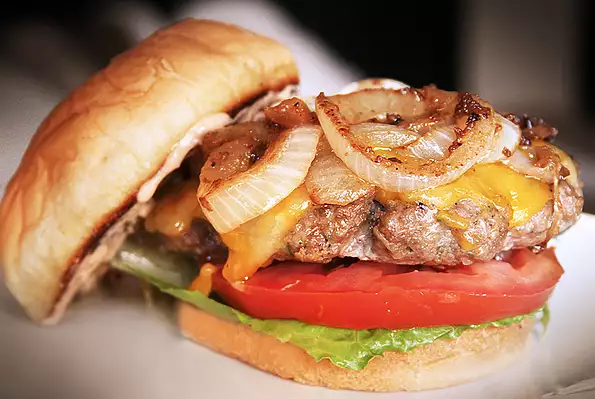

Hamburger

Description
The best burger recipe for summertime grilling. This juicy burger is jam-packed with all kinds of stuff and no tasteless
bread crumbs! Serve on buns with your favorite condiments. This recipe takes about 10 minutes to prep, 10 minutes to cook (total 20 minutes) and it will serve 4 people.
Per serving this meal contains 445 calories; 39g protein; 8.8 carbohydrates; 27.5g fat; 173.6mg
cholesterol; 966.9mg sodium
Ingredients
- 1 1/2 pounds lean ground beef
- 1/2 cup shredded Colby Jack or Cheddar cheese
- 1 ounce envelope dry onion soup mix
- 1 egg
- 1 teaspoon dried parsley
- 1 teaspoon Worcestershire saucet
- 1 teaspoon soy sauce
- 1 teaspoon dried basil
- 1 tablespoon garlic powder
- 1 teaspoon dried oregano
- 1 clove garlic minced
- 1/2 teaspoon crushed dried rosemary
- salt and pepper to taste
- 1/2 onion finely chopped
Steps
- Preheat a grill on high heat.
- Mix together ground beef, onion, cheese, onion soup mix, egg, garlic, garlic powder, soy sauce, Worcestershire sauce,
parsley, basil, oregano, rosemary, salt, and pepper in a large bowl. Use your hands to form 4 patties.
- Cook patties on the preheated grill until well-done, about 5 minutes per side.